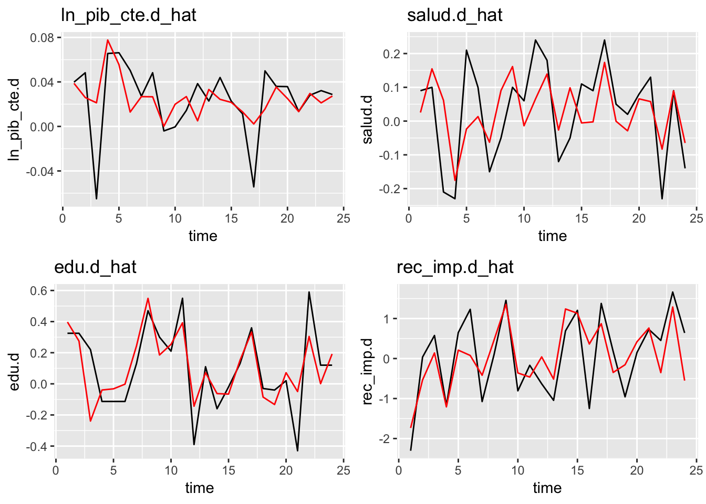

Chapter 13 Estimación del modelo 2
El siguiente paso consiste en observar los valores estimados para cada relación de cointegración y determinar si todas ellas influyen en el comportamiento de corto plazo de cada una de las series en el análisis.
Johansen [1995] propone restringir \(\beta'\) de tal manera que la primera parte de la matriz sea una matriz identidad. Es decir, \(\beta'=[I_r : \beta'_1]\) donde \(\beta'_1\) tiene dimensión \(((k-r) \times r)\). Esto se obtiene al normalizar el espacio de cointegración de la siguiente manera:
\[ \beta_c = \beta (S'\beta)^{-1} \]
donde \(S'= (I_r,0)\).
#traemos las series
ln_pib_cte <- series_db$log_GDP_constante
edu <- series_db$Gasto_Educacion_PorcGDP
salud <- series_db$Gasto_Salud_PorcGDP
rec_imp <- series_db$Recaudacion_Impositiva_PorcGDP
# generamos la matriz X
model.data <- cbind(ln_pib_cte,edu,salud,rec_imp)
# estimamos el rango de cointegracion de PI con ca.jo
M1 <- ca.jo(model.data,spec='transitory', type='eigen',K=2)13.1 Modelo 1: VECM con K=2 (lags), y r=1 (relaciones de cointegración)
Desde los objetos obtenidos por el ajuste del modelo, se puede obtener \(\beta_c\) de la siguiente manera
k_aux <- 4
rel_coint_aux <- 1
tmp_beta <- M1@V[,1:rel_coint_aux]
st <- cbind(diag(rel_coint_aux),matrix(0,rel_coint_aux,(k_aux-rel_coint_aux)))
beta_c <- tmp_beta%*%solve(st%*%tmp_beta)
beta_c## [,1]
## [1,] 1.0000000
## [2,] -0.2734779
## [3,] -0.3187240
## [4,] 0.2359534De tal manera que los vectores de cointegración tienen una interpretación mucho más sencilla.
Este resultado puede ser validado con lo que se obtiene a partir de la función cajorls
M1.jorls <- cajorls(M1, r = rel_coint_aux)
M1.jorls$beta## ect1
## ln_pib_cte.l1 1.0000000
## edu.l1 -0.2734779
## salud.l1 -0.3187240
## rec_imp.l1 0.2359534Ahora bien, Una vez que se han definido las relaciones de cointegración restringida veamos cómo es el ajuste del modelo a partir de estas definiciones:
summary(M1.jorls$rlm)## Response ln_pib_cte.d :
##
## Call:
## lm(formula = ln_pib_cte.d ~ ect1 + constant + ln_pib_cte.dl1 +
## edu.dl1 + salud.dl1 + rec_imp.dl1 - 1, data = data.mat)
##
## Residuals:
## Min 1Q Median 3Q Max
## -0.078343 -0.009848 0.003730 0.015520 0.040400
##
## Coefficients:
## Estimate Std. Error t value Pr(>|t|)
## ect1 0.025758 0.033287 0.774 0.449
## constant -0.751983 1.017088 -0.739 0.469
## ln_pib_cte.dl1 -0.248623 0.247119 -1.006 0.328
## edu.dl1 -0.030300 0.028502 -1.063 0.302
## salud.dl1 -0.060255 0.050947 -1.183 0.252
## rec_imp.dl1 -0.004260 0.008287 -0.514 0.613
##
## Residual standard error: 0.03313 on 18 degrees of freedom
## Multiple R-squared: 0.4807, Adjusted R-squared: 0.3077
## F-statistic: 2.777 on 6 and 18 DF, p-value: 0.04316
##
##
## Response edu.d :
##
## Call:
## lm(formula = edu.d ~ ect1 + constant + ln_pib_cte.dl1 + edu.dl1 +
## salud.dl1 + rec_imp.dl1 - 1, data = data.mat)
##
## Residuals:
## Min 1Q Median 3Q Max
## -0.34754 -0.12005 -0.01668 0.11324 0.35722
##
## Coefficients:
## Estimate Std. Error t value Pr(>|t|)
## ect1 0.81182 0.22350 3.632 0.00191 **
## constant -24.67609 6.82904 -3.613 0.00199 **
## ln_pib_cte.dl1 -2.43462 1.65923 -1.467 0.15954
## edu.dl1 -0.29248 0.19137 -1.528 0.14380
## salud.dl1 0.08351 0.34207 0.244 0.80990
## rec_imp.dl1 -0.15076 0.05564 -2.710 0.01436 *
## ---
## Signif. codes: 0 '***' 0.001 '**' 0.01 '*' 0.05 '.' 0.1 ' ' 1
##
## Residual standard error: 0.2225 on 18 degrees of freedom
## Multiple R-squared: 0.5246, Adjusted R-squared: 0.3662
## F-statistic: 3.311 on 6 and 18 DF, p-value: 0.02245
##
##
## Response salud.d :
##
## Call:
## lm(formula = salud.d ~ ect1 + constant + ln_pib_cte.dl1 + edu.dl1 +
## salud.dl1 + rec_imp.dl1 - 1, data = data.mat)
##
## Residuals:
## Min 1Q Median 3Q Max
## -0.32725 -0.08489 0.01468 0.08836 0.19771
##
## Coefficients:
## Estimate Std. Error t value Pr(>|t|)
## ect1 -0.10603 0.14013 -0.757 0.4591
## constant 3.22199 4.28164 0.753 0.4615
## ln_pib_cte.dl1 1.04846 1.04030 1.008 0.3269
## edu.dl1 0.20965 0.11998 1.747 0.0976 .
## salud.dl1 0.14725 0.21447 0.687 0.5011
## rec_imp.dl1 -0.03174 0.03489 -0.910 0.3750
## ---
## Signif. codes: 0 '***' 0.001 '**' 0.01 '*' 0.05 '.' 0.1 ' ' 1
##
## Residual standard error: 0.1395 on 18 degrees of freedom
## Multiple R-squared: 0.2986, Adjusted R-squared: 0.06485
## F-statistic: 1.277 on 6 and 18 DF, p-value: 0.3163
##
##
## Response rec_imp.d :
##
## Call:
## lm(formula = rec_imp.d ~ ect1 + constant + ln_pib_cte.dl1 + edu.dl1 +
## salud.dl1 + rec_imp.dl1 - 1, data = data.mat)
##
## Residuals:
## Min 1Q Median 3Q Max
## -1.43866 -0.70667 -0.03661 0.56896 1.42373
##
## Coefficients:
## Estimate Std. Error t value Pr(>|t|)
## ect1 -2.4251 0.9305 -2.606 0.0179 *
## constant 73.9915 28.4304 2.603 0.0180 *
## ln_pib_cte.dl1 14.0049 6.9076 2.027 0.0577 .
## edu.dl1 0.9886 0.7967 1.241 0.2306
## salud.dl1 -2.0040 1.4241 -1.407 0.1764
## rec_imp.dl1 0.3522 0.2316 1.520 0.1458
## ---
## Signif. codes: 0 '***' 0.001 '**' 0.01 '*' 0.05 '.' 0.1 ' ' 1
##
## Residual standard error: 0.9262 on 18 degrees of freedom
## Multiple R-squared: 0.3743, Adjusted R-squared: 0.1657
## F-statistic: 1.794 on 6 and 18 DF, p-value: 0.1569mysum <- summary(M1.jorls$rlm)
screenreg(list(mysum[[1]], mysum[[2]],mysum[[3]],mysum[[4]]))##
## =====================================================
## Model 1 Model 2 Model 3 Model 4
## -----------------------------------------------------
## ect1 0.03 0.81 ** -0.11 -2.43 *
## (0.03) (0.22) (0.14) (0.93)
## constant -0.75 -24.68 ** 3.22 73.99 *
## (1.02) (6.83) (4.28) (28.43)
## ln_pib_cte.dl1 -0.25 -2.43 1.05 14.00
## (0.25) (1.66) (1.04) (6.91)
## edu.dl1 -0.03 -0.29 0.21 0.99
## (0.03) (0.19) (0.12) (0.80)
## salud.dl1 -0.06 0.08 0.15 -2.00
## (0.05) (0.34) (0.21) (1.42)
## rec_imp.dl1 -0.00 -0.15 * -0.03 0.35
## (0.01) (0.06) (0.03) (0.23)
## -----------------------------------------------------
## R^2 0.48 0.52 0.30 0.37
## Adj. R^2 0.31 0.37 0.06 0.17
## Num. obs. 24 24 24 24
## RMSE 0.03 0.22 0.14 0.93
## =====================================================
## *** p < 0.001, ** p < 0.01, * p < 0.05De lo anterior se pede concluir lo siguiente:
- En la serie de logaritmo natural del GDP a precios corrientes:
- Ninguna relación de cointegración parece ser significativa
- Esto es ligeramente preocupante, ya que estaría indicando que las relaciones de largo plazo de la recaudación fiscal, desempleo, gasto en salud y el incremento de la población total tienen repercusiones en la dinámica de corto plazo del producto interno bruto
- En la serie de recaudación Fiscal:
- Las relaciones de cointegración 2 y 3 parecen ser significativas, esto indica que la recaudación fiscal tiene ajustes en el corto plazo derivado de la dinámica de largo plazo de la misma recaudación, del desempleo y del gasto en salud
- Respondiendo más rápidamente cuando la relación de cointegración normalizada por el desempelo se aleja de su tendencia central
- Cuando el desempleo crece respecto al gasto en salud en el largo plazo, la velocidad de ajuste con la cual reacciona la serie de recaudación fiscal en el corto plazo es de manera negativa, lo cual tiene todo el sentido, ya que ante un incremente en desempleo la recaudación fiscal se verá deteriorada
- En la serie de desempleo:
- Se pube observar que tanto la relación de cointegración 3, como la relación de cointegración 4 son significativas a un nivel de confianza del 90%
- Esto nos dice que ante variaciones del a tendencia central tanto del desempelo como del incremento de la población total y el gasto en salud el desempleo tenderá a ajustarse en el corto plazo
- Estos ajustes sucederan más rápido para desviaciones de la población total y el gasto en salud
- Se pube observar que tanto la relación de cointegración 3, como la relación de cointegración 4 son significativas a un nivel de confianza del 90%
- En la serie de gasto en salud:
- Se observa que la primera relación de cointegración resulta significativa a un nivel de confianza del 90%
- Esto significa que cuando el producto interno bruto de la nación se aleja de su tendencia central, ya sea como incremento o decremento en el largo plazo, el gasto en salud se verá impactado en el corto plazo
- Lo que parece tomar más relevancia en el caso de análisis es que dicha velocidad de ajuste es muy lenta, es decir, que a pesar de observar granes incrementos en el producto interno bruto, el ajuste en el gasto en salud tardará mucho tiempo en verse reflejado
Finalmente obsevemos nuestro modelo ajustado vs los datos recopilados:
